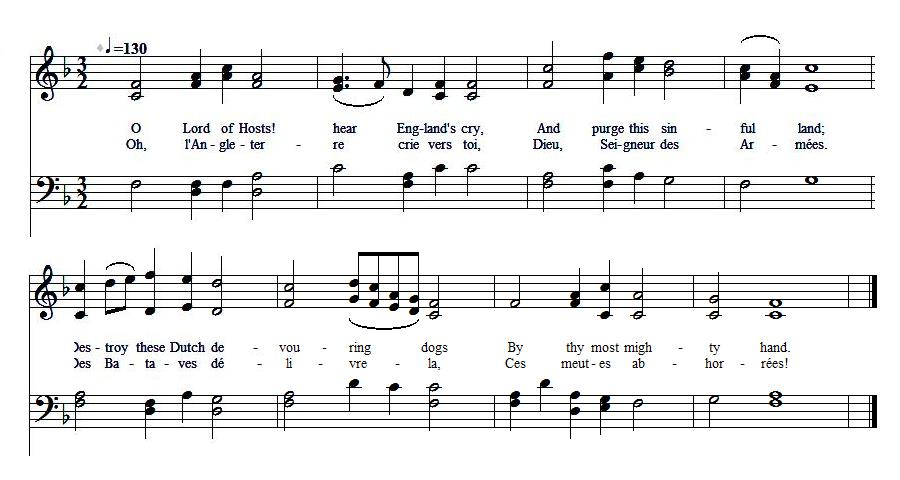
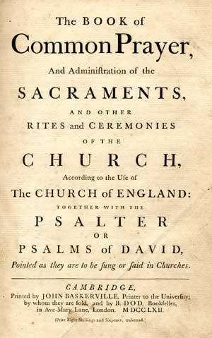
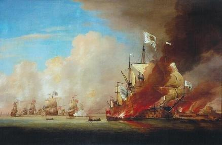
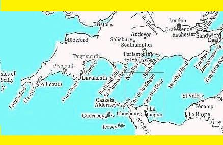
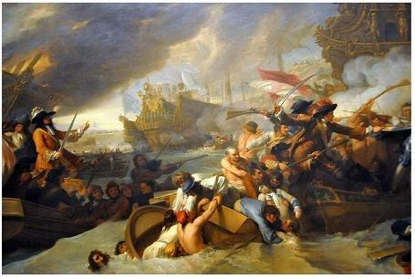

England's New Psalm
Nouveau psaume pour l'Angleterre
Composed by the Printer William Anderton, after the Battle of La Hogue in May 1692
Composé par l'imprimeur William Anderton après la bataille de Saint-Vaast - La Houghe (mai 1692)
from "The True Loyalist" , page 39, 1779
Tune - Mélodie N°1"Psalm 84" from the "Scottish Psalter", harmony by J. Milton
Tune - Mélodie N°2
"Psalm 84" attributed to either McFarland or Freeman Lewis
Sequenced by Christian Souchon
|
To the tune:
A verse translation of Psalm 84.9-13 matching the lyrics of this Jacobite Psalm appears in "Nine Psalmes done into Metre" (1645) by John Milton (? - 1694. The same Psalm inspired the Jacobite Muse with other parodies: Scotland's New Psalm The Cameronian Cat The tune N°1 fitting in with this text is to be found in "The Scottish Psalter", 1650, with a harmony from J. Milton. The tune N°2 (the sound background to this page) is attributed to one McFarland in "The Beauties of Harmony", by Freeman Lewis, 1813 (and to Freeman Lewis in "Supplement to the Kentucky Harmony", by Ananias Davisson, 1820!). However, there's no end of tunes, with diverse titles imposed by tradition, matching the rhythmic structure of this psalm. Milton's translation of Psalm 83.9-10 reads: Lord God of Hosts hear now my prayer O Jacob's God give ear, Thou God our shield look on the face Of thy anointed dear. |
 |
A propos de la mélodie:
Une traduction rimée du Psaume 83 9-13 (selon la numérotation de la Bible de Maredsous) se trouve chez John Milton (? - 1694) dans "Neuf psaumes en vers". Le même Psaume inspira à la muse Jacobite d'autres parodies: Nouveau psaume pour l'Ecosse Le chat Caméronien Le timbre N°1 qui correspond à ce texte provient du "Psautier d'Ecosse", 1650, et reprend l'harmonisation de J. Milton. Le timbre N°2 (fond sonore de la page) est attribué à un certain McFarland dans "Les beautés de l'harmonie" de Freeman Lewis, 1813 (et au même Lewis dans le "Supplément à l'Harmonie du Kentucky", d'Ananias Davisson, 1820!). Mais toute une ribambelle de timbres, aux titres divers fixés par la tradition, épousent la structure rythmique de ce psaume. Le texte de Milton commence ainsi: "Prête l'oreille à mon appel O Seigneur des armées! Notre bouclier, Eternel, C'est ton onction sacrée... |

|
ENGLAND'S NEW PSALM [1]
Composed by one ANDERTON [2], printer in London, whom King William put to death for printing and dispersing King James's Manifestos, after the battle of La-Hogue [3]; designed to be sung on the scaffold by the said Anderton and which was found in his pocket after his death. 1. O Lord of Hosts! hear England's cry, And purge this sinful land; Destroy these Dutch devouring dogs By thy most mighty hand. 2. And, as the Red Sea was return'd, [4] On Pharaoh and his host, Let in the ocean and o'erflow The Hogan-Mogan coast. [5] 3. Undam them first, then dam[n] them, Lord, [6] Destroy the viper breed, The feed of Frogland be abhorr'd [7] By all the holy seed. 4. King Jacob bless, most mighty Lord, And set him on his throne; Confound confederating foes, For thou art God alone. 5. Curb Absalom's aspiring pride, [8] And hang him on a tree. Rebellion thus and parricide, [9] Should still rewarded be. Source: "The True Loyalist; or, Chevalier's Favourite: being a collection of elegant songs, never before printed. Also several other loyal compositions, wrote by eminent hands." Printed in the year 1779. |
 |
UN NOUVEAU PSAUME POUR L'ANGLETERRE [1]
Composé par un certain ANDERTON [2], imprimeur à Londres, que le Roi Guillaume fit exécuter pour avoir imprimé et diffusé des tracts du roi Jacques après la bataille de la Hougue [3]. Il devait être par le supplicié sur l'échafaud. On le trouva dans sa poche après sa mort. 1. Oh, l'Angleterre crie vers toi, Dieu, Seigneur des Armées. Des Bataves délivre-la, Ces meutes abhorrées! 2. La Mer Rouge put engloutir [4] L'armée de Pharaon. Laisse l'océan recouvrir Les bords d'Hogan-Mogan! [5] 3. Abas ses digues! Damne-le! [6] Détruis tous ces serpents! Que ces grenouilles soient honnies [7] Par les honnêtes gens! 4. Bénis le roi Jacques, Seigneur! Rends-lui son trône aussi! Confonds la ligue d'imposteurs Complotant contre lui! 5. Refrène l'orgueil d'Absalon! [8] Pends-le par les cheveux! Que parricide [9] et rébellion Soient expiés, tous deux! (Trad. Christian Souchon (c) 2011) |
|
[1]
This New "Psalm"
is a parody of the metrical version of Psalm 84 (or 83) of David, beginning with "How pleasant is thy dwelling place", and may have served as model for the later
Scotland's New Psalm
composed on the occasion of the 48th birthday of the Chevalier de Saint George.
Other instances of such parodies are
The Cameronian Cat , John Roy's parody of Psalm 23 , On Gallia's Shores (Psalm 137). The Holy Ode . O great eternal God above . The Song of the Bow, (2 Samuel 1:18) . "Metrical" (with a precise rhythmic arrangement of syllables) translations of all or part of the Book of Psalms in vernacular poetry, meant to be sung as hymns in a church were called metrical psalters some of which included melodies or even harmonization. Their composition was basically an enterprise of the Protestant Reformation. The first complete English metrical Psalter "The Psalter of David" (1549) was the work of Robert Crowley (1517 - 1588). But the best known is the "Sternhold and Hopkins Psalter" was first published in 1548. New editions were published in Geneva in 1556, 1558, 1561 containing an increasing number of psalms translated by new authors, until the first complete (150 psalms) Psalter was published in 1562 by John Day(e) . It remained the standard version in use in England, with only a few changes, until well into the 19th century (over 600 editions until the final edition was printed in 1828). For use by the Church of Scotland another Psalter, initially composed by Francis Rous , was approved by the General Assembly in 1650 (after 6 years of scrutiny). Main source: Wikipedia |
[1]
Ce "Psaume nouveau"
est une parodie de la version "métrique" (rimée) du Psaume 84 (ou 83) de David, celui qui commence par " Qu'ils sont plaisants tes tabernacles". Il peut avoir servi de modèle pour le
Psaume nouveau pour l'Ecosse
composé pour le 48ème anniversaire du Chevalier. D'autres parodies des Psaumes se trouvent aux pages
Chat Caméronien , Psaume 22 selon John Roy et Sur les côtes de Gaule (Psaume 136). L'Ode sainte . Eternel Dieu du firmament . Le chant de l'Arc, (2 Samuel 1:18) . Ces traductions "métriques" (où les pieds sont des syllabes comme dans la poésie française) de tout ou partie du Livre des Psaumes en langue "vulgaire", destinées à être chantées à l'église s'appelaient des psautiers métriques où l'on trouvait parfois des mélodies et même des arrangements. C'est avec la Réforme que cette forme de poésie musicale s'est épanouie. On doit à Robert Crowley (1517 - 1588) le premier psautier complet en anglais, le "Psautier de David" (1549). Mais le plus célèbre est le Psautier de Sternhold et Hopkins publié à parir de 1548, puis à Genève en 1556, 1558, 1561 avec un nombre croissant de psaumes traduits par de nouveaux auteurs, jusqu'au premier recueil complet des 150 psaumes, publié en 1562 par John Day(e) . Ce fut la version de référence en Angleterre, avec des modifications mineures, jusqu'au 19ème siècle (plus de 600 éditions jusqu'à la dernière, en 1828). A l'usage de l' Eglise d'Ecosse un autre Psautier composé, à l'origine, par Francis Rous , fut adopté par l'Assemblée Générale de 1650 (après 6 années d'examen minutieux). Principale source: Wikipedia |
|
[2]
William Anderton
was printer in London, 1688-93. Said to have been a
North Country man. He was apprenticed to Miles Flesher or Fletcher, and later (?) to one Snowden. Became a corrector of the Press. At the Revolution he set up a private printing press.
At the Sessions of June 1st-3rd, 1693, he was tried for printing two pamphlets. "Remarks upon the present confederacy and late Revolution in England" and "A French Conquest neither desirable nor practicable". The principal evidence against him was given by Robert Stephens, the "Messenger of the Press", a legal officer created under Queen Elizabeth I, to confine printing to London, Oxford and Cambridge, limit the number of printers and presses and prohibit certain publications. He was entitled to enter houses to search for unlicensed presses and publications. This officer declared he had known the prisoner for upward of two years as a printer of seditious libels but never could tell where he worked. On May 2nd he had tracked two journeymen printers to a house and there found William Anderton in a secret room in which were a printing press, letters, and all other materials for printing; and in the press was an Errata, as found in the Remarks. Amongst other broadsides found in the room were: "A Caution to the Navy", "An Historical Romance upon the Wars", "A Second Letter to the Bishop of Salisbury", which were said to be in the same type as the "Remarks". Two printers, R. Roberts and one Snowden, a dissenter to whom Anderton was some time an apprentice, also gave evidence. In summing up the evidence everything was aggravated to the utmost, but it was a long time before the jury could be persuaded to find him guilty of high treason. He was sentenced to death and executed at Tyburn on June 16th, 1693. Source: "A dictionary of the printers and booksellers who were at work in England, Scotland and Ireland from 1688 to 1725" by Henry R. Plomer (Oxford University Press, 1922)  [3] Battle of La Hogue : is the name given to a series of encounters which took place from the 19th to the 23rd of May 1692, between an allied British and Dutch fleet and a French force, off the Cotentin Peninsula in Normandy.A body of French troops, and a number of Jacobite exiles, had been collected in the Cotentin. The government of Louis XIV prepared a naval armament to cover their passage across the Channel. This force was composed of French ships starting from Brest and commanded by the count of Tourville, that should have been reinforced by a squadron which was scattered by a gale. Tourville with only 45 ships of the line encountered on the 19th of May a British fleet of 63 sail under command of Edward Russell, that was joined by the Dutch squadron of 36 sail, not far from Cape Barfleur. The British flag-ship the "Britannia", and the French, the "Soleil Royal", were both completely crippled. After several hours of conflict, the French admiral drew off without the loss of a ship. Till the 23rd, the two fleets remained off the north coast of the Cotentin and drifted towards La Hague. About half the French rounded the cape, and fled to St Malo. The others were carried to the eastward. Tourville now transferred his own flag, and left his captains free to save themselves as they best could. He left the "Soleil Royal," and sent her with two others to Cherbourg, where they were destroyed. The others sought refuge on the east side of the Cotentin at the anchorage of La Hougue, where the troops destined for the invasion were encamped. Here 13 of them were burnt by the English, in the presence of the French generals and of the exiled king James II. Source: from the Encyclopaedia Britannica 1911 [4] Red Sea : biblical (Exodus 14) allusion to the polders in the Netherlands, those low-lying tracts of land enclosed by embankments known as dikes. [5] Hogan-Mogan : see The Rebellious Crew [6] Undam, dam(n) : there was something heroic about the way many Jacobites went to death with such running fire of good humour (cf. Lord Lovat's Beheading ). [7] Frogland : see James, come, kiss me now [8] Absalom : the Bible (2 Samuel 14.25) describes him as the most handsome man in the kingdom. Absalom eventually rebelled against his father David. During the Battle of Ephraim Wood, after the young man, renowned for his abundant hair, had been caught by his head in the boughs of an oak-tree, as the mule he was riding ran beneath it, he was killed by David's men who discovered him, hanging there still alive. [9] Parricide : in fact, William did not kill but evinced his father-in-law. |
[2]
William Anderton
fut imprimeur à Londres entre 1688 et 1693. On dit qu'il venait du nord du pays. Il fut apprenti chez Miles Flesher ou Fletcher, puis chez un certain Snowden. Il devint ensuite correcteur de presse. Pendant la "glorieuse" Révolution, il se constitua une imprimerie clandestine. A la session des Assises du 1 au 3 juin 1693, il fut jugé pour avoir imprimé deux libelles: "Remarques sur l'actuelle conspiration et la récente révolution en Angleterre" et "Une victoire française ni souhaitable ni possible".
Le principal témoin à charge fut le "messager de presse" Robert Stephens. On appelait ainsi un auxiliaire de justice créé sous Elizabeth I en vue de limiter les lieux d'édition aux seules villes de Londres, Oxford et Cambridge, ainsi que le nombre d'imprimeurs et de presses et d'empêcher certaines publications; il était autorisé à perquisitionner pour rechercher des presses et des imprimés non déclarés. Ce policier déclara qu'il soupçonnait le prisonnier depuis plus de 2 ans d'éditer des textes séditieux, sans pouvoir localiser son imprimerie. Le 2 mai, il avait suivi 2 tâcherons qui le conduisirent à une maison où il découvrit dans une pièce secrète William Anderton et tout un matériel d'imprimeur. Sur la presse se trouvait un "Errata" identique à celui des "Remarques". Parmi les feuilles volantes ( broadsides ) trouvées dans cette pièce, figuraient une "Réprimande à la Marine", une "Histoire romancée des guerres", une "Deuxième lettre à l'évêque de Salisbury", imprimés avec les mêmes caractères que les "Remarques". Deux imprimeurs, R. Roberts et un certain Snowden, un dissident chez qui Anderton avait été apprenti, furent aussi cités comme témoins. Le procureur grossit les faits à l'extrême. Cependant bien des heures s'écoulèrent avant que les jurés soient convaincus de rendre un verdict de haute trahison. Il fut condamné et pendu à Tyburn , le 16 juin 1693. Source: "Dictionnaire des imprimeurs et libraires en activité en Angleterre, Ecosse et Irlande entre 1688 et 1725 par Henry R. Plomer (Presses Universitaires d'Oxford, 1922)  [3] Bataille de St Vaast : on appelle ainsi une série d'affrontements, entre le 19 et le 23 mai 1692, entre une flotte anglo-hollandaise et des forces françaises, au large du Cotentin.Des troupes françaises et d'un certain nombre d'exilés Jacobites avait été rassemblés dans le Cotentin. Louis XIV avait ordonné la constitution d'une flotte pour protéger leur traversée de la Manche. Il s'agissait de vaisseaux venant de Brest, commandés par Tourville, qui auraient dû être renforcés par une escadre qui fut dispersée par un coup de vent. Le 19 mai, Tourville, avec 45 vaisseaux de ligne seulement engagea le combat avec une flotte anglaise de 63 navires commandée par Edouard Russell, bientôt rejointe par une escadre hollandaise de 36 bateaux, non loin de la pointe de Barfleur. Le vaisseau amiral anglais "Britannia" et son homologue français "Soleil Royal" furent entièrement ravagés. Après plusieurs heures de combat, l'amiral français se retira sans voir perdu un seul bateau. Jusqu'au 23 les 2 flottes demeurèrent au large de la côte nord du Cotentin, poussées par le courant vers la Hague. La moitié des vaisseaux français contournèrent le cap et allèrent s'abriter à Saint-Malo. Les autres furent entraînés vers l'est. Tourville fit amener le pavillon amiral, laissant à ses capitaines le soin de sauver leurs propres vaisseaux du mieux qu'ils le pourraient. Il quitta le "Soleil Royal" qui escorté de 2 autres bateaux rejoignit Cherbourg, où on acheva de les détruire. Les autres bateaux cherchèrent refuge sur la côte est du Cotentin au mouillage de St Vaast, où fut installé un campement pour le corps expéditionnaire. Treize de ces bateaux furent incendiés par les Anglais, sous les yeux des généraux français et de Jacques II. Source: Encyclopaedia Britannica 1911 [4] Mer Rouge : citation de la Bible (Exode 14) appliquée aux polders des Pays-Bas, protégés par des digues de la mer qui les surplombe. [5] Hogan-Mogan : cf. La bande de rebelles [6] Abas les digues...damne... : jeu de mots sur "undam" et "dam". Bien des Jacobites firent preuve d'un tel héroïque humour macabre. (cf. Décapitation de Lord Lovat ) [7] Grenouilles : cf. Jacques, un baiser! [8] Absalon : la Bible (2 Samuel 14.25) le décrit comme le plus beau de tous les hommes du royaume, lequel finit par se rebeller contre son père, le roi David. Pendant la bataille du Bois d'Ephraïm, le jeune homme, réputé pour son abondante chevelure, se retrouva suspendu par les cheveux à un chêne sous lequel il passait chevauchant sa mule. Il fut achevé par les soldats de David qui le découvrirent dans cette fâcheuse posture. [9] Parricide : en réalité, Guillaume ne tua pas mais évinça seulement son beau-père. |
|
|
|

The Battle of La-Hogue by Benjamin West (1778) (Nat. Art Gal. Washington DC)